청소년상담사-1급(1교시) (2017-09-16 기출문제)
1과목: 상담사 교육 및 사례지도
1. 수퍼비전의 정의로 옳지 않은 것은?
- 수퍼바이저가 내담자의 직업 활동을 평가하고, 적절한 직업적 행동을 습득하도록 돕는 교육과정
- 상담자의 수행활동을 감독 혹은 지도하는 활동
- 수퍼바이저가 수퍼바이지의 치료적 능력의 발달을 촉진하려는 의도를 가지고 계획적으로 하는 대인관계
- 상담분야의 선배 또는 보다 전문적인 위치에 있는 사람이 후배 또는 미숙한 구성원에게 제공하는 개입
- 상담자가 상담을 잘 할 수 있도록 경험이 많고 숙련된 상담자가 도와주는 과정
(정답률: 알수없음)

2. 수퍼비전에 관한 설명으로 옳지 않은 것은?
- 수퍼비전의 구체적인 목표는 수퍼바이저의 이론적 배경으로부터 크게 영향을 받는다.
- 수퍼비전의 단기적 목표는 수퍼바이지의 셀프 수퍼비전 능력 개발에 있다.
- 내담자를 보호하는 것은 수퍼비전의 중요한 목적이 된다.
- 프로이트(S. Freud)가 만든 수요모임이 수퍼비전의 첫출발이라고 볼 수 있다.
- 수퍼비전 관계는 수퍼비전이 진행되면서 변화한다.
(정답률: 알수없음)
3. 일회성 초빙수퍼비전에서 수퍼바이저의 역할 및 태도에 관한 설명으로 옳은 것을 모두 고른 것은?
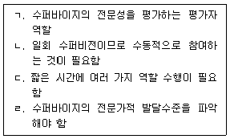
- ㄱ, ㄷ
- ㄱ, ㄹ
- ㄱ, ㄷ, ㄹ
- ㄴ, ㄷ, ㄹ
- ㄱ, ㄴ, ㄷ, ㄹ
(정답률: 알수없음)
4. 수퍼비전에서 발생하는 게임을 줄이기 위한 수퍼바이저의 노력으로 옳지 않은 것은?
- 게임을 유발한 수퍼바이지의 역동을 이해한다.
- 직접적인 의사소통이 가능한 열린 관계를 만든다.
- 자신이 사용하는 권력게임, 기권게임 등을 자각한다.
- 수퍼바이지가 경험하고 있는 애매모호함과 혼란을 공감한다.
- 분노, 적개심, 거절당할 위험 등을 고려하여 수퍼바이지에게 긍정적인 피드백을 한다.
(정답률: 알수없음)
5. 수퍼비전 관계에 영향을 미치는 요인 중 수퍼바이지와 관련된 것을 모두 고른 것은?
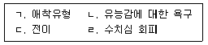
- ㄱ
- ㄴ, ㄹ
- ㄱ, ㄷ, ㄹ
- ㄴ, ㄷ, ㄹ
- ㄱ, ㄴ, ㄷ, ㄹ
(정답률: 알수없음)
6. 수퍼바이저의 역전이 행동을 모두 고른 것은?
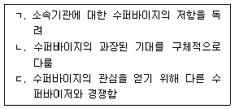
- ㄱ
- ㄱ, ㄴ
- ㄱ, ㄷ
- ㄴ, ㄷ
- ㄱ, ㄴ, ㄷ
(정답률: 알수없음)
7. 수퍼바이저의 개입에 관한 설명으로 옳은 것은?
- 초급상담자에게 직면적 개입을 많이 사용하여 좋은 상담자로 성장하게 한다.
- 초급상담자에게 승화적 개입을 많이 사용하는 것은 적절하지 않다.
- 초급상담자는 다른 발달단계 상담자보다 강한 저항을 보이므로 촉진적인 자세로 대응해야 한다.
- 초급상담자에 대한 개념적 개입으로 내담자 문제의 개념화, 상담목표와 계획, 상담개입기술을 알려준다.
- 고급상담자를 위한 수퍼비전도 수퍼바이저가 주도한다.
(정답률: 알수없음)
8. 다음 사례에 관한 수퍼바이저의 피드백으로 옳지 않은 것은?
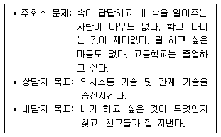
- 상담자가 상담목표를 설정한 이유는 무엇인가요?
- 내담자의 학교적응과 관련된 요인을 탐색하였나요?
- ‘내 속을 알아주는 사람이 아무도 없다.’는 것은 친구관계보다는 가족문제이므로 가족관계 개선으로 상담목표를 재설정해야 합니다.
- ‘친구 ○○과 마음을 나눌 수 있는 관계를 맺는다. 이를 통해 주변 친구들과 원만히 대인관계를 하는 방법을 익힌다.’처럼 구체적으로 상담목표를 설정해야 합니다.
- 내담자 주호소 문제의 원인이 상담자는 무엇이라고 생각하나요?
(정답률: 알수없음)
9. 셀프 수퍼비전에서 자기개방 후 자신에게 하는 질문으로 옳지 않은 것은?
- 유능한 상담자로 내담자에게 인식되었는가?
- 가장 간결하게 말한다면 뭐라고 해야 했을까?
- 개방하지 않았으면 어떤 어려움이 생겼을까?
- 상담의 초점을 어떻게 다시 내담자에게 돌릴 것인가?
- 지금이 가장 적절한 시점인가?
(정답률: 알수없음)
10. 심리검사 수퍼비전에 특별히 주의를 기울여야 하는 이유가 아닌 것은?
- 표준화된 심리검사 수퍼비전의 용이성
- 심리검사와 상담결과 사이의 관련성
- 상담자가 수행해야할 중요한 역할로서의 심리검사
- 직무배치 등 현실에 영향을 미치는 검사결과
- 검사결과 및 해석의 다양성
(정답률: 알수없음)
11. 수퍼바이저에 관한 평가항목에 해당되는 것을 모두 고른 것은?
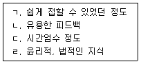
- ㄱ, ㄴ
- ㄱ, ㄷ
- ㄱ, ㄴ, ㄷ
- ㄴ, ㄷ, ㄹ
- ㄱ, ㄴ, ㄷ, ㄹ
(정답률: 알수없음)
12. 집단수퍼비전에 관한 설명으로 옳은 것은?
- 집단수퍼비전에서는 집단역동이 일어남
- 수퍼바이저의 시간 측면에서 비경제적임
- 개인수퍼비전에서 사용할 수 있는 녹화영상자료 검토 등은 사용할 수 없음
- 수퍼바이저는 집단과정에 관한 훈련과 경험을 갖추지 않아도 됨
- 개인수퍼비전을 보완하기 위해서만 이루어짐
(정답률: 알수없음)
13. 상담자의 역전이 때문에 내담자의 호소문제인 관계 문제가 악화되어 비윤리적이라고 평가되었을 때 적용된 윤리적 가치는?
- 충실성(fidelity)
- 정직(integrity)
- 비해악성(nonmaleficence)
- 공정성(justice)
- 자율성(autonomy)
(정답률: 알수없음)
14. 하스(L. Haas)와 말로프(J. Malouf)가 제안한 ‘윤리적 결정을 위한 논리적 배경’으로 옳은 것을 모두 고른 것은?
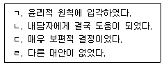
- ㄱ, ㄴ
- ㄱ, ㄹ
- ㄷ, ㄹ
- ㄱ, ㄴ, ㄷ
- ㄱ, ㄴ, ㄷ, ㄹ
(정답률: 알수없음)
15. 다음은 집단상담 초기에 이루어진 구조화의 내용이다. 상담 윤리적 측면에서 옳지 않은 것은?
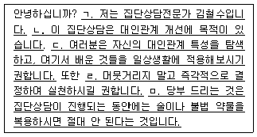
- ㄱ
- ㄴ
- ㄷ
- ㄹ
- ㅁ
(정답률: 알수없음)
16. 수퍼비전의 적법 절차(due process)에 포함되지 않는 것은?
- 수퍼바이지에게 수행에 대한 명확한 기대를 제공한다.
- 수퍼바이지에게 언제, 어떤 방식으로 평가가 이루어지는지를 알린다.
- 수퍼바이지가 합의한 목표에 도달하지 못하더라도 수련 중이기 때문에 불리한 조치가 행해지지 않음을 알린다.
- 수퍼바이지가 적절하지 못한 행동을 했을 때 다루어지는 과정을 알린다.
- 수행이 미진할 때 수퍼바이지가 자기 입장을 피력할 수 있는 권리가 있음을 알린다.
(정답률: 알수없음)
17. 미성년자를 상담할 때 윤리적 문제가 발생할 수 있는 행위를 모두 고른 것은?
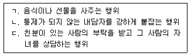
- ㄱ
- ㄴ
- ㄱ, ㄷ
- ㄴ, ㄷ
- ㄱ, ㄴ, ㄷ
(정답률: 알수없음)
18. 상담 중에 있는 내담자가 자살한 사례의 수퍼비전에서 수퍼바이저의 행동으로 옳지 않은 것은?
- 수퍼바이지가 자신의 개인적 반응을 효과적으로 관리할 수 있도록 돕는다.
- 수퍼바이지가 속한 기관 차원에서 해야 할 책임을 이행하도록 돕는다.
- 상담자들이 이런 일에 대하여 필요 이상의 책임을 지려는 현상이 자주 발생한다는 사실을 수퍼바이지에게 알린다.
- 수퍼바이지가 먼저 책임감으로부터 빨리 벗어나도록 돕는다.
- 수퍼바이지가 자신의 생각과 감정을 표현할 수 있는 기회를 제공한다.
(정답률: 알수없음)
19. 내담자의 실제 혹은 예상되는 감정과 유사한 감정을 경험한 상담자에게 이차스트레스 장애가 발생하였다. 이 과정을 설명하는 개념은?
- 반동형성
- 감정 전염
- 전이
- 복합 외상
- 구성주의적 과정
(정답률: 알수없음)
20. 개업상담소를 운영하고 있는 수퍼바이지가 이전에 비해 이론적 지식을 자기구성적으로 활용하는 능력과 융통성이 증가하였다는 평가를 받았다. 이에 관한 수퍼비전 이론은?
- 스톨튼버그(C. Stoltenberg)와 델워스(U. Delworth)의 통합발달모델
- 로네스타드(M. Rønnestad)와 스코볼트(T. Skovholt)의 전생애발달모델
- 버나드(J. Bernard)의 변별모델
- 홀로웨이(E. Holloway)의 체계적 접근모델
- 리즈(B. Liese)와 백(J. Beck)의 인지행동모델
(정답률: 알수없음)
21. 로네스타드(M. Rønnestad)와 스코볼트(T. Skovholt)가 전생애발달모델에서 제안한 상담자 발달의 주제가 아닌 것은?
- 점차 내부에서 외부로 초점이 이동한다.
- 점차 자기성찰과 셀프 수퍼비전을 배우게 된다.
- 전문가로서의 자신과 한 개인으로서의 자신이 통합되는 과정이다.
- 대인관계에서의 경험과 자원은 전문성 발달을 촉진시킨다.
- 내담자의 실제 변화 과정을 더욱 현실적으로 인식하게 된다.
(정답률: 알수없음)
22. 다음은 상담센터 상담자의 수퍼비전 내용의 일부이다. 수퍼비전 변별모델에 근거하여 수퍼바이저의 역할과 수퍼비전 초점 영역을 옳게 연결한 것은?
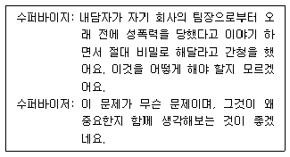
- 교사 - 개입기술
- 상담자 - 개념화 기술
- 자문가 - 개인화 기술
- 자문가 - 개념화 기술
- 상담자 - 개인화 기술
(정답률: 알수없음)
23. 홀로웨이(E. Holloway)의 체계적 접근모델에서 수퍼비전 과제에 포함되지 않는 것은?
- 상담기술
- 사례개념화
- 정서적 자각
- 전문가 역할
- 수퍼바이지 평가
(정답률: 알수없음)
24. 홀로웨이(E. Holloway)의 체계적 접근모델이 설명하는 ‘수퍼비전 기능 - 수퍼바이저 권력 – 관계’를 옳지 않게 연결한 것은?
- 관찰과 평가 – 보상ㆍ강압적 권력 –위계적 관계
- 교수와 조언 – 보상ㆍ강압적 권력 –위계적 관계
- 시범 – 전문ㆍ호감적 권력 –협력적 관계
- 자문 – 전문ㆍ호감적 권력 –협력적 관계
- 지지와 공유 – 호감적 권력 –협력적 관계
(정답률: 알수없음)
25. 수퍼비전 계약서나 구조화에 포함될 수 있는 항목을 모두 고른 것은?
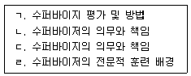
- ㄱ
- ㄴ, ㄷ
- ㄴ, ㄹ
- ㄱ, ㄴ, ㄷ
- ㄱ, ㄴ, ㄷ, ㄹ
(정답률: 알수없음)
2과목: 청소년 관련 법과 행정
26. 청소년복지 지원법령상 청소년증을 발급할 수 있는 기관이 아닌 것은?
- 서울특별시장
- 부산광역시 동래구청장
- 제주특별자치도지사
- 충청남도 아산시장
- 강원도 평창군수
(정답률: 알수없음)
27. 청소년복지 지원법령상 지역사회 청소년통합지원체계를 위한 필수연계기관이 아닌 것을 모두 고른 것은?
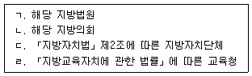
- ㄱ, ㄴ
- ㄱ, ㄹ
- ㄴ, ㄷ
- ㄱ, ㄴ, ㄷ
- ㄴ, ㄷ, ㄹ
(정답률: 알수없음)
28. 청소년복지 지원법령상 이주배경청소년지원센터의 업무 내용으로 옳은 것을 모두 고른 것은?
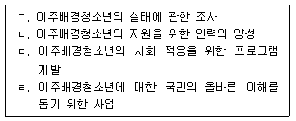
- ㄱ, ㄴ
- ㄱ, ㄹ
- ㄴ, ㄷ
- ㄴ, ㄷ, ㄹ
- ㄱ, ㄴ, ㄷ, ㄹ
(정답률: 알수없음)
29. 청소년복지 지원법령상 청소년복지지원기관에 관한 평가 기준으로 옳지 않은 것은?
- 기관ㆍ시설 환경의 적정성
- 기관ㆍ시설 운영 및 인력관리의 적정성
- 지역경제에 대한 공헌도
- 이용자 및 입소자의 서비스 만족도
- 사업내용의 적정성
(정답률: 알수없음)
30. 청소년 보호법령상 청소년고용금지업소가 아닌 것은?
- 안마실을 설치하여 영업을 하는 목욕장업
- 「농어촌정비법」을 적용받는 숙박시설에 의한 숙박업
- 일반음식점영업 중 주로 주류의 조리ㆍ판매를 목적으로 하는 카페
- 회비 등을 받거나 유료로 만화를 빌려 주는 만화대여업
- 「영화 및 비디오물의 진흥에 관한 법률」에 따른 비디오물소극장업
(정답률: 알수없음)
31. 청소년 보호법령상 청소년통행금지구역(이하, “금지구역”이라 한다.)에 관한 설명으로 옳은 것은?
- 경찰서장은 금지구역을 지정할 수 있다.
- 금지구역은 청소년의 통행을 24시간 금지하는 구역으로 한다.
- 금지구역을 정할 때 여성가족부장관의 의견을 들어야 하는 것은 법정요건이다.
- 청소년이 금지구역을 통행하려고 하는 때에는 교육감이 이를 막을 수 있다.
- 금지구역의 구체적인 지정기준은 법률로 정한다.
(정답률: 알수없음)
32. 청소년 보호법령상 환각물질 흡입청소년의 중독 여부 판별을 신청할 수 없는 사람은?
- 본인
- 친권자
- 경찰관
- 직계존속
- 미성년후견인
(정답률: 알수없음)
33. A와 B는 C시(시장 D)에 소재하는 주류의 조리ㆍ판매를 목적으로 하는 소주방에서 술을 마시던 중 이 업소에 고용되어 있는 E가 청소년이라는 사실(이하, “이 사실” 이라 한다.)을 발견하였다. 청소년 보호법령상 이 사실에 관한 설명으로 옳지 않은 것은?
- A와 B는 이 사실을 D에게 신고하여야 한다.
- D는 신고를 한 A와 B를 포상할 수 있다.
- A와 B는 이 사실을 구두로도 신고할 수 있다.
- 신고를 접수한 공무원은 그 신고 내용을 신고접수대장에 기록하여야 한다.
- D는 이 사실을 외부에 공개하여 다른 업소들이 청소년을 고용하지 않도록 하여야 한다.
(정답률: 알수없음)
34. 아동ㆍ청소년의 성보호에 관한 법령상 규정의 내용을 옳게 연결한 것은?
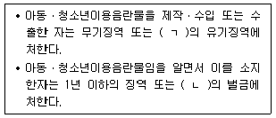
- ㄱ: 1년 이상, ㄴ: 5천만원 이하
- ㄱ: 3년 이하, ㄴ: 2천만원 이하
- ㄱ: 3년 이상, ㄴ: 3천만원 이하
- ㄱ: 5년 이하, ㄴ: 1천만원 이하
- ㄱ: 5년 이상, ㄴ: 2천만원 이하
(정답률: 알수없음)
35. 아동ㆍ청소년의 성보호에 관한 법령상 아동대상 성폭력범죄자의 신상정보 공개 대상이 아닌 것은?
- 실제 거주지
- 등록대상 성범죄의 요지
- 금지약물복용여부
- 법령에 따른 전자장치 부착여부
- 성폭력범죄 전과사실
(정답률: 알수없음)
36. P는 청소년활동 진흥법령상의 청소년수련시설(이하, “이 시설”이라 하고, 대표자는 P이다.)을 A광역시 B자치구에 설치ㆍ운영하고자 한다. 청소년활동 진흥법령상 이와 관련한 내용으로 옳지 않은 것은?
- P는 이 시설을 운영하기 전에 B구의 구청장에게 등록하여야 한다.
- P는 이 시설의 설치에 필요한 부동산 면적의 1/2이상을 소유하여야 수련시설의 허가를 받을 수 있다.
- B구의 구청장은 이 시설이 법령의 허가 요건 중 여성가족부령으로 정하는 경미한 사항을 충족하지 못한 경우에는 조건부허가를 할 수 있다.
- 만약 P가 이 시설을 운영 중이라면, P는 이 시설에 대한 정기 안전점검을 실시하여야 한다.
- 국가는 예산의 범위에서 이 시설의 안전점검에 드는 비용의 전부를 보조할 수 있다.
(정답률: 알수없음)
37. 소년법상 소년부 판사의 권한이 아닌 것은?
- 조사관에 대한 조사명령
- 사건 본인의 소환
- 조건부 기소유예
- 긴급동행영장 발부
- 화해권고
(정답률: 알수없음)
38. 청소년 관련 법률의 제정 연도가 빠른 순서대로 나열한 것은?
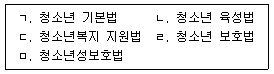
- ㄱ - ㄴ - ㅁ - ㄹ - ㄷ
- ㄱ - ㄴ - ㄹ - ㅁ - ㄷ
- ㄴ - ㄱ - ㄹ - ㄷ - ㅁ
- ㄴ - ㄱ - ㄹ - ㅁ - ㄷ
- ㄴ - ㄹ - ㄱ - ㄷ - ㅁ
(정답률: 알수없음)
39. 청소년복지 지원법령상 명시된 한국청소년상담복지개발원의 사업이 아닌 것은?
- 청소년 상담인력의 양성과 교육
- 청소년 가족에 대한 상담과 교육
- 청소년 복지시설에 대한 관리감독
- 청소년 상담자료의 제작과 보급
- 청소년 상담 정보체계의 구축과 운영
(정답률: 알수없음)
40. ( )에 들어갈 청소년 연령을 옳게 나열한 것은?
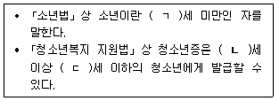
- ㄱ: 18, ㄴ: 8, ㄷ: 18
- ㄱ: 18, ㄴ: 9, ㄷ: 18
- ㄱ: 19, ㄴ: 8, ㄷ: 19
- ㄱ: 19, ㄴ: 9, ㄷ: 18
- ㄱ: 19, ㄴ: 9, ㄷ: 24
(정답률: 알수없음)
41. 청소년 보호법령상 청소년의 인터넷 중독 예방에 관한 설명으로 옳은 것은?
- 인터넷게임의 제공자는 15세 이상의 청소년이 회원으로 가입할 경우 친권자등의 동의를 받을 필요가 없다.
- 인터넷게임의 제공자는 14세 미만 청소년가입자의 경우 친권자에게 게임의 등급, 결제정보 등을 고지해야한다.
- 인터넷게임의 제공자는 16세 미만 청소년에게 오후 10시부터 오전 6시까지 인터넷게임을 제공해서는 안 된다.
- 인터넷게임 중독 피해청소년을 위한 구체적인 지원 사항은 여성가족부장관령으로 정한다.
- 심야시간대 제공이 제한되는 인터넷 게임물의 범위가 적절한지 여부는 여성가족부장관과 문화체육관광부장관이 협의하여 2년마다 평가한다.
(정답률: 알수없음)
42. 학교 밖 청소년 지원에 관한 법령상 학교 밖 청소년 지원센터에 관한 설명으로 옳지 않은 것은?
- 학교 밖 청소년 지원업무 수행을 위해 지역사회 청소년통합지원체계를 구성하는 기관과 연계 및 협력해야 한다.
- 관리업무 수행직원은 학교 밖 청소년 관련 실무 경력이 7년 이상인 사람이어야 한다.
- 연면적 150제곱미터 이상의 공간을 갖추어야 한다.
- 센터장은 다른 청소년 지원 기관의 장과 겸임할 수 없다.
- 지정기간은 3년으로 한다.
(정답률: 알수없음)
43. 학교폭력예방 및 대책에 관한 법령상 학교폭력 분쟁조정에 관한 설명으로 옳지 않은 것은? (학교폭력대책자치위원회는 이하 “자치위원회”라 한다.)
- 자치위원회의 학교폭력 분쟁조정 기간은 1개월을 넘지 못한다.
- 자치위원회는 분쟁조정 신청을 받은 날부터 5일 이내에 분쟁조정을 시작해야 한다.
- 피해학생과 가해학생 간 또는 그 보호자 간의 손해배상과 관련된 합의조정은 분쟁조정안에 포함된다.
- 자치위원회 위원이 가해 또는 피해 학생과 친족인 경우 해당사건의 분쟁조정에서 제척된다.
- 자치위원회 위원장은 분쟁조정결과를 해당 교육지원청 교육장에게 보고해야 한다.
(정답률: 알수없음)
44. 다음 설명에 해당되는 청소년시설은?
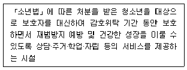
- 청소년회복지원시설
- 청소년특화시설
- 청소년자립지원관
- 청소년치료재활센터
- 청소년보호ㆍ재활센터
(정답률: 알수없음)
45. 청소년 기본법령상 청소년상담사 배치기준에 관한 설명으로 옳지 않은 것은?
- 특별시ㆍ광역시ㆍ도 단위 청소년상담복지센터: 3명 이상
- 시ㆍ군ㆍ구 단위 청소년상담복지센터: 2명 이상
- 청소년치료재활센터: 1명 이상
- 청소년자립지원관: 1명 이상
- 청소년쉼터: 1명 이상
(정답률: 알수없음)
46. 학교폭력예방 및 대책에 관한 법령상 학교장이 가해학생에 대한 선도의 긴급성으로 인해 학교폭력대책자치위원회의 사후 추인을 전제로 우선적으로 취할 수 있는 조치를 모두 고른 것은?
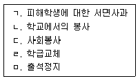
- ㄱ, ㄴ, ㄷ
- ㄱ, ㄴ, ㅁ
- ㄴ, ㄷ, ㄹ
- ㄴ, ㄹ, ㅁ
- ㄷ, ㄹ, ㅁ
(정답률: 알수없음)
47. 학교 밖 청소년 지원 위원회(이하 “지원위원회”라 한다.)에 관한 설명으로 옳지 않은 것은?
- 학교 밖 청소년 지원 법령 및 제도 개선 관련 사항 심의
- 유관기관과의 협력체계 및 지역사회 지원체계 구축 관련 사항 심의
- 지원위원회의 조직ㆍ구성ㆍ운영 등에 관한 사항은 대통령령으로 정함
- 지원위원회의 민간위원은 여성가족부장관이 위촉함
- 지원위원회 위원장은 여성가족부장관이 됨
(정답률: 알수없음)
48. 청소년활동 진흥법령상 청소년 활동에 관한 설명으로 옳지 않은 것은?
- 청소년수련활동은 청소년지도자의 도움 없이 청소년 스스로 수련거리에 참여하는 자발적 체험활동이다.
- 청소년교류활동은 다양한 교류를 통해 청소년의 공동체의식 등을 함양하는 체험활동이다.
- 청소년문화활동에는 예술활동, 스포츠활동, 동아리활동 및 봉사활동 등이 있다.
- 청소년수련거리란 청소년수련활동에 필요한 프로그램과 이와 관련된 사업이다.
- 청소년활동시설 중 청소년수련관은 종합수련시설이다.
(정답률: 알수없음)
49. ‘청소년이 행복한 세상, 청소년이 꿈꾸는 밝은 미래’를 비전으로 삼고 이를 추진하기 위하여 5대 영역 15대 중점과제를 제시한 것은?
- 제2차 청소년육성 5개년 계획
- 제3차 청소년육성 5개년 계획
- 제4차 청소년정책기본계획
- 제5차 청소년정책기본계획
- 제6차 청소년정책기본계획
(정답률: 알수없음)
50. 청소년 기본법령상 청소년단체에 관한 설명으로 옳지 않은 것은?
- 지방자치단체는 예산의 범위에서 운영에 필요한 경비 일부를 보조할 수 있다.
- 청소년단체는 정관이 정한 바에 따라 청소년육성과 관련한 수익사업을 할 수 있다.
- 여성가족부장관의 인가를 받아 한국청소년단체협의회를 설립할 수 있다.
- 법인은 청소년단체의 운영을 지원하기 위하여 재산을 출연할 수 없다.
- 국가는 청소년지도자의 연수를 위해 청소년단체에 지원을 할 수 있다.
(정답률: 알수없음)
3과목: 상담연구방법론의 실제
51. 양적 연구 패러다임의 예로 옳지 않은 것은?
- 일반 청소년과 비행 청소년의 특성이 다른지 통계적으로 검정해본다.
- 비행 청소년이 속해 있는 교실에서 함께 지내며 그들의 심리적 역동을 관찰한다.
- 탈 비행에 가장 효과적인 상담 기법이 무엇인지 실험해본다.
- 청소년 비행과 밀접하다고 판단되는 변인과의 상관계수를 계산해본다.
- 열악한 심리적 환경에도 불구하고 건강한 발달을 이루게 하는 매개 변인의 효과를 계산해본다.
(정답률: 알수없음)
52. 자기 노출을 지극히 꺼리는 학생의 심리 상태를 파악하는 직접적 자료 수집 방법은?
- 임상심리사의 심리 검사 해석을 참조
- 담임교사가 작성한 학교생활기록부를 참조
- 스마트폰 초기 화면의 종류나 교체 빈도를 참조
- 상담사의 상담 결과 보고서를 참조
- 부모나 형제의 가정생활 경험담을 참조
(정답률: 알수없음)
53. 가정 결손의 정도가 청소년 비행에 미치는 영향에서 자아 탄력성의 간접 효과를 파악 하는데 학년이나 지역의 영향은 차단했다고 할 때, 이 연구에서 고려하고 있는 변수를 모두 고른 것은?
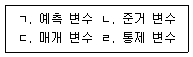
- ㄱ, ㄴ
- ㄷ, ㄹ
- ㄱ, ㄴ, ㄷ
- ㄴ, ㄷ, ㄹ
- ㄱ, ㄴ, ㄷ, ㄹ
(정답률: 알수없음)
54. 연구의 조작적 정의가 필요하지 않은 경우는?
- 특정 상담 기법의 효과를 알아보는 연구에 여러 상담자가 참여하는 경우
- 전문가가 아닌 일반인에게 연구 결과를 친절히 설명해주기 위한 경우
- 후속되는 반복(replication) 연구가 필수적으로 요구되는 경우
- 기존 도구로는 충분하지 않아서 새로운 측정 도구를 제작해야 하는 경우
- 특정 대상의 표적 행동을 여러 관찰자가 동시에 기록하는 경우
(정답률: 알수없음)
55. 학술 연구 문제의 선정 이유로 옳지 않은 것은?
- 현재의 쟁점을 해결하거나 설명해 줄 기존 이론이 충분하지 않다.
- 아직 규명되지 못하여 선행 연구에서 추후 연구 과제로 제언되었다.
- 특정 협회의 이익을 옹호하는 근거를 마련할 필요가 있다.
- 초기 이론의 타당성이 의심되는 정황이 자주 보고되었다.
- 연구자가 현장 경험 과정에서 의문을 갖게 되었다.
(정답률: 알수없음)
56. 척도의 선정과 척도 점수의 사용에 관한 설명으로 옳은 것을 모두 고른 것은?
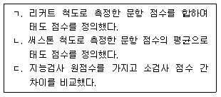
- ㄱ
- ㄴ
- ㄷ
- ㄱ, ㄴ
- ㄱ, ㄴ, ㄷ
(정답률: 알수없음)
57. 표본의 특성을 자세히 서술하는 이유를 모두 고른 것은?
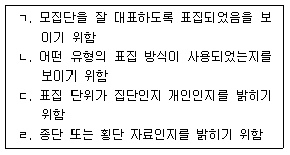
- ㄱ, ㄴ
- ㄷ, ㄹ
- ㄱ, ㄴ, ㄷ
- ㄴ, ㄷ, ㄹ
- ㄱ, ㄴ, ㄷ, ㄹ
(정답률: 알수없음)
58. 총합 점수 산출 방식의 예로 옳지 않은 것은?
- 자아개념 점수와 자기효능감 점수를 합하여 성역할태도 총점으로 하였다.
- 아버지에 대한 태도 점수와 어머니에 대한 태도 점수를 합하여 부모에 대한 태도 점수로 삼았다.
- 웩슬러 지능검사의 언어 이해와 지각 추론 점수를 합하여 일반 능력 지수를 산출했다.
- 학급 학생 개인의 시험 점수를 합하여 학급 전체의 점수로 삼았다.
- 어려운 문항에 높은 가중치를 부여하여 총점을 산출했다.
(정답률: 알수없음)
59. 분산분석표(A: 반복측정, B: 상담방법, S: 내담자)를 보고 알 수 있는 연구 설계의 특징으로 옳은 것은?
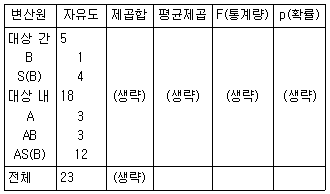
- 세 개의 상담 방법을 비교하기 위한 연구이다.
- 내담자들은 하나의 상담 방법만 경험했다.
- 상담의 효과를 세 번 측정했다.
- 연구에 참여한 내담자 수는 모두 열두 명이다.
- 상담 방법과 내담자 집단이 교차되었다.
(정답률: 알수없음)
60. 학생 100명을 대상으로 두 명의 관찰자가 행동 유형을 분류한 결과를 해석한 것으로 옳지 않은 것은?
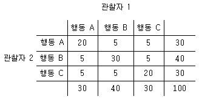
- 두 관찰자의 분류 일치도는 .70이다.
- 두 관찰자가 우연히 행동 A라고 동일하게 분류했을 확률은 .09다.
- 두 관찰자가 우연히 행동 B라고 동일하게 분류했을 확률은 .16이다.
- 두 관찰자가 우연히 행동 C라고 동일하게 분류했을 확률은 .09다.
- 두 관찰자 간의 순수한 분류 일치도는 약 .65다.
(정답률: 알수없음)
61. 데이터 분석 결과에 대한 해석으로 옳은 것을 모두 고른 것은?
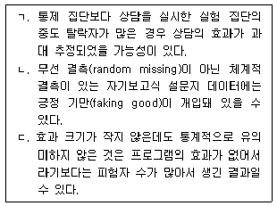
- ㄱ
- ㄴ
- ㄷ
- ㄱ, ㄴ
- ㄱ, ㄴ, ㄷ
(정답률: 알수없음)
62. 전국에서 세 학교(A)를 임의 추출하고, 추출된 각 학교에서 두 학급(B)씩 임의 추출했으며, 각 학급에서 임의로 여섯 명의 학생(S)을 추출하여 교우 관계를 조사했을 때, 아래 분산분석 FA값과 FB(A)값을 합하면?
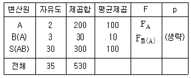
- 1.10
- 10.10
- 20.00
- 100.10
- 200.00
(정답률: 알수없음)
63. 추리통계에서 상관계수 r에 영향을 주는 요인과 그에 대한 설명으로 옳지 않은 것은?
- 중간집단의 제외: 공분산의 증가로 r이 커진다.
- 극단점수: 직선회귀선의 방향으로 놓인 극단점수는 r의 크기를 감소시킨다.
- 사례수: 표본이 크면 r은 모집단의 상관계수에 가까워진다.
- 측정의 오차: 측정도구나 상황에 따라 동일변인들 간의 r이 변화한다.
- 분산도: 두 변인 중 하나 이상이 분포에 제약을 받을 때는 r이 변화한다.
(정답률: 알수없음)
64. 회귀분석을 위한 기본 가정에 관한 설명으로 옳은 것을 모두 고른 것은?
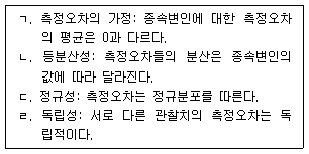
- ㄱ, ㄴ
- ㄴ, ㄷ
- ㄷ, ㄹ
- ㄱ, ㄷ, ㄹ
- ㄱ, ㄴ, ㄷ, ㄹ
(정답률: 알수없음)
65. 다중회귀분석에서 나타나는 축소현상(shrinkage)에 관한 설명으로 옳은 것을 모두 고른 것은?
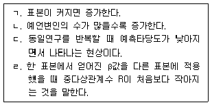
- ㄱ, ㄴ
- ㄴ, ㄷ
- ㄴ, ㄹ
- ㄱ, ㄷ, ㄹ
- ㄴ, ㄷ, ㄹ
(정답률: 알수없음)
66. 사후비교의 방법과 그에 관한 설명으로 옳은 것을 모두 고른 것은?
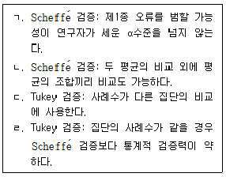
- ㄱ, ㄴ
- ㄱ, ㄷ
- ㄱ, ㄹ
- ㄴ, ㄷ
- ㄷ, ㄹ
(정답률: 알수없음)
67. 다음 그림은 가상의 데이터를 사용하여 SES(socio-economic status)와 부모의 기대가 교육 포부를 예측하는 연구모형을 검증하기 위하여 경로분석을 실시한 결과이다. 결과의 해석이 옳지 않은 것은? (단, 경로계수들은 모두 표준화 회귀계수이며, α = .⑤ 에서 통계적으로 유의 하다).
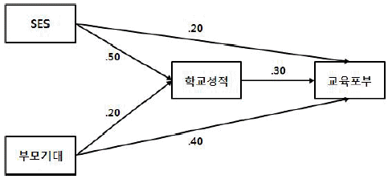
- 교육포부에 대한 SES의 총효과는 0.35이다.
- 학교성적이 높을수록 교육포부의 수준이 높아진다.
- SES가 교육포부에 미치는 총효과는 부모기대가 교육포부에 미치는 총효과보다 작다.
- 부모기대가 학교성적을 거쳐 교육포부에 미치는 간접효과는 0.50이다.
- 교육포부를 직접적으로 예측하는 변인 중 부모기대의 효과가 가장 크다.
(정답률: 알수없음)
68. 다중기초선 설계(multiple baseline design)에 관한 설명으로 옳지 않은 것은?
- 하나의 개입효과가 여러 행동에 일반화될 수 있다.
- 다른 시계열 설계보다 시간과 자원이 더 필요하다.
- 윤리적인 관점에서 개입을 철회하기 어려울 때 사용한다.
- 개입시작점을 동일하게 조정하여 효과를 높인다.
- 내담자의 다양한 행동, 배경, 환경을 대상으로 기초선이 얻어진다.
(정답률: 알수없음)
69. 모의상담연구(analogue counseling research)에 관한 설명으로 옳지 않은 것은?
- 복잡한 상담현상을 그대로 보여준다.
- 독립변인 이외의 변인들을 통제할 수 있다.
- 연구자의 의도대로 상담과정을 조작할 수 있다.
- 상담연구에서 발생하는 윤리적인 문제를 줄일 수 있다.
- 모의상담과 실제상담의 유사성이 높을수록 외적타당도가 높아진다.
(정답률: 알수없음)
70. 영어 말하기 능력 향상을 위한 새로운 수업프로그램 A, B의 효과를 검증하기 위해 세 개의 학급을 추출하여 직전 학기 영어 쓰기 시험 성적을 통제하고, 기존 수업프로그램, 새로운 수업프로그램 A, B를 세 개 학급에 각각 한 프로그램씩 6주 동안 실시한 뒤 영어 말하기 시험을 실시하였다. 분석방법에 관한 설명으로 옳은 것을 모두 고른 것은?
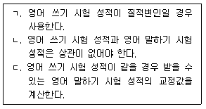
- ㄱ
- ㄴ
- ㄷ
- ㄱ, ㄴ
- ㄴ, ㄷ
(정답률: 알수없음)
71. 반복측정설계에 관한 설명으로 옳지 않은 것은?
- 피험자 분산이 작아서 처치효과를 확인하기 쉽다.
- 동일한 피험자가 여러 수준의 처치를 받게 된다.
- 집단 간 설계보다 더 많은 수의 피험자를 필요로 한다.
- 측정시점과 처치수준의 상호작용효과를 확인한다.
- 이월효과(carry-over effect)와 처치효과를 구분하기 어렵다.
(정답률: 알수없음)
72. 다음에서 설명하는 질적연구방법은?
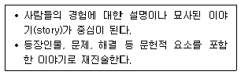
- 문화기술지 연구
- 현상학적 연구
- 근거이론 연구
- 내러티브 연구
- 사례연구
(정답률: 알수없음)
73. 질적연구에서 타당성을 확보하기 위한 노력으로 옳지 않은 것은?
- 1∼2개의 자료를 활용하여 분석을 실시한다.
- 연구의 단계마다 비판적 평가를 기울인다.
- 연구참여자와 합의된 내용도 반영하여 자료를 해석한다.
- 연구자가 가지고 있는 편견, 가정을 먼저 인정한다.
- 다른 연구자들에게 연구의 과정과 결과를 평가받는다.
(정답률: 알수없음)
74. 고지된 동의(informed consent)를 얻기 위해 자료수집 전에 피험자에게 알려야 할 내용이 아닌 것은?
- 연구기간과 연구절차
- 녹음, 녹화자료의 수집과 보관 방법
- 연구의 참여로 인한 이익과 불이익
- 속임기법의 불가피성과 사후해명
- 중도철회의 권리와 결과
(정답률: 알수없음)
75. 연구결과를 보고할 때 표절을 막는 방법으로 옳지 않은 것은?
- 연구자의 이전 저작물을 인용할 때에는 출처를 표시하지 않는다.
- 본문에서 인용한 것은 모두 참고문헌에서 해당 출처를 밝힌다.
- 내용을 번역, 요약한 경우 출처를 표시한다.
- 타인 저작물의 내용을 바꾸어 쓴 경우 출처를 표시한다.
- 1차 문헌을 확인하였으나 인용하지 않고 2차 문헌의 내용을 인용하면 1, 2차 문헌의 출처를 모두 표시한다.
(정답률: 알수없음)